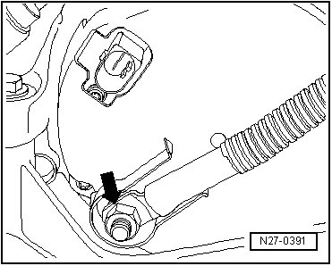

Positive: Description and Operation
B+ Cable Mount to Generator
CAUTION!
If the B+ wire is not tightened to specification, the following may occur:
• Battery will not be completely charged.
• The complete electrical/electronics systems may fail (disabled vehicle).
• Fire hazard due to arcing.
• Damage to electronic components and control modules caused by excessive voltage.
- The tightening specification for the B+ wire mounting nut - arrow - can be found in the respective generator assembly overview.
